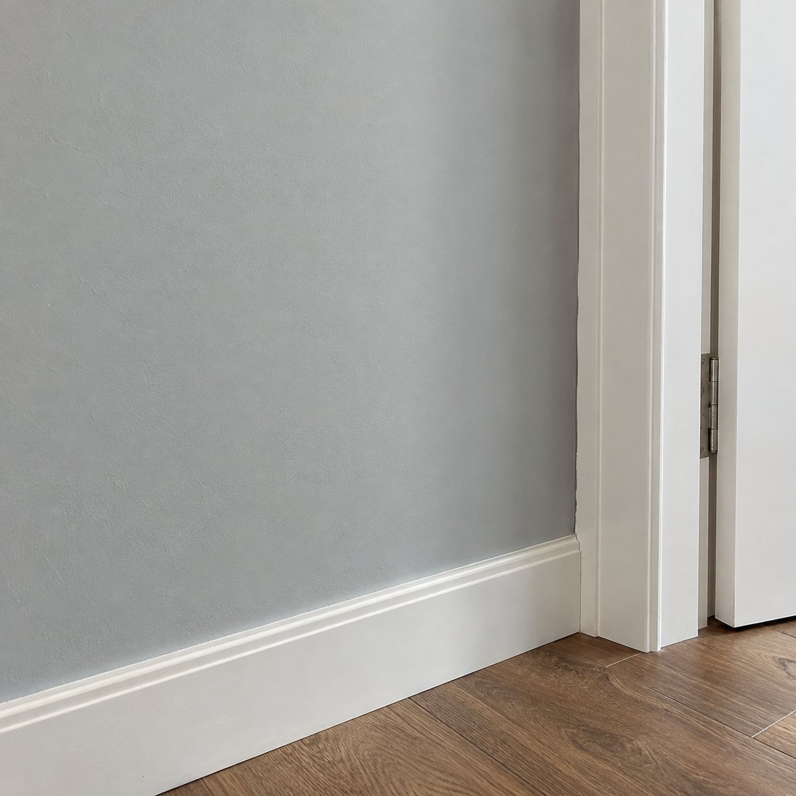
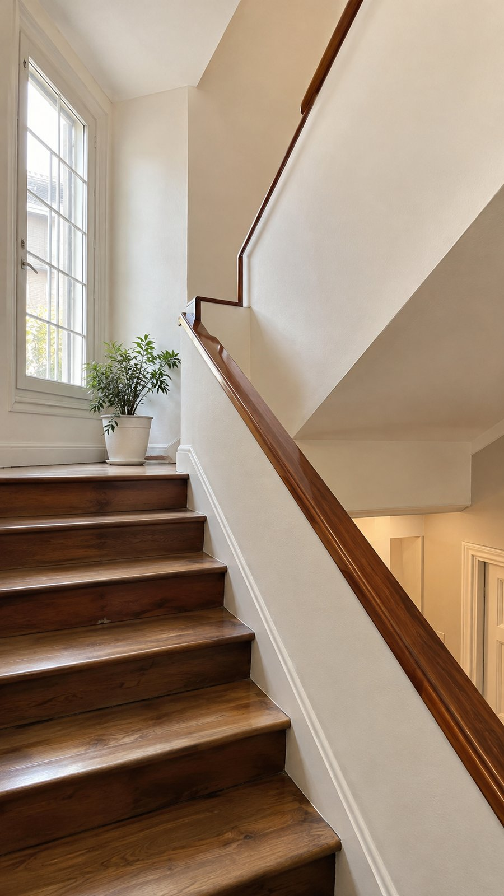
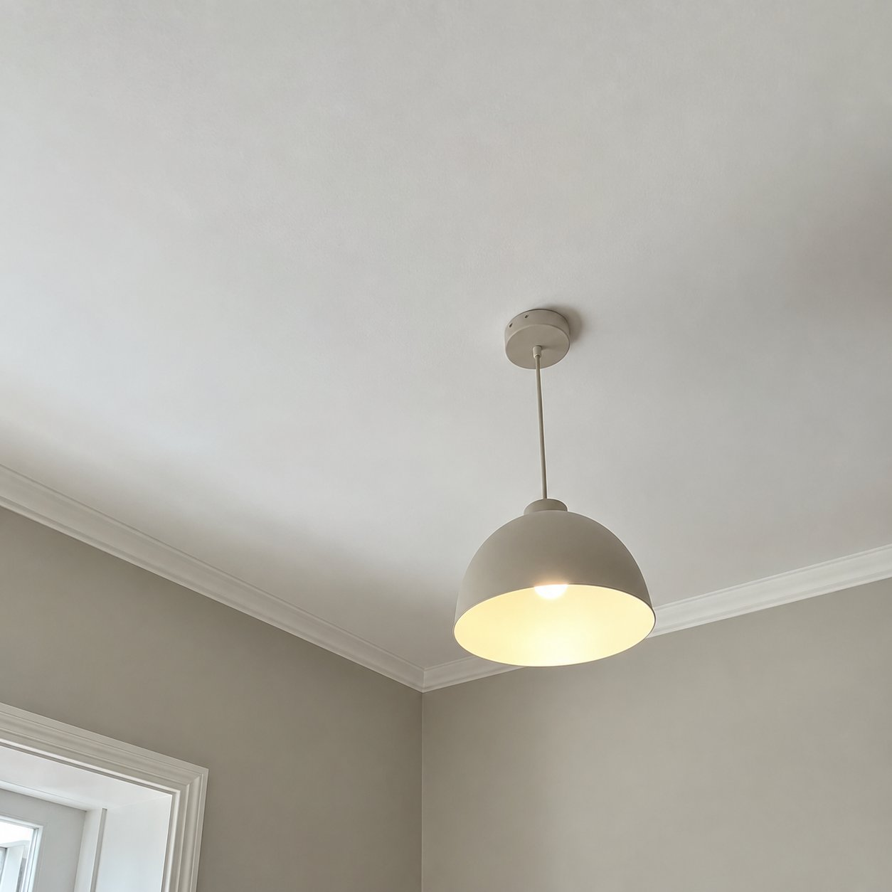
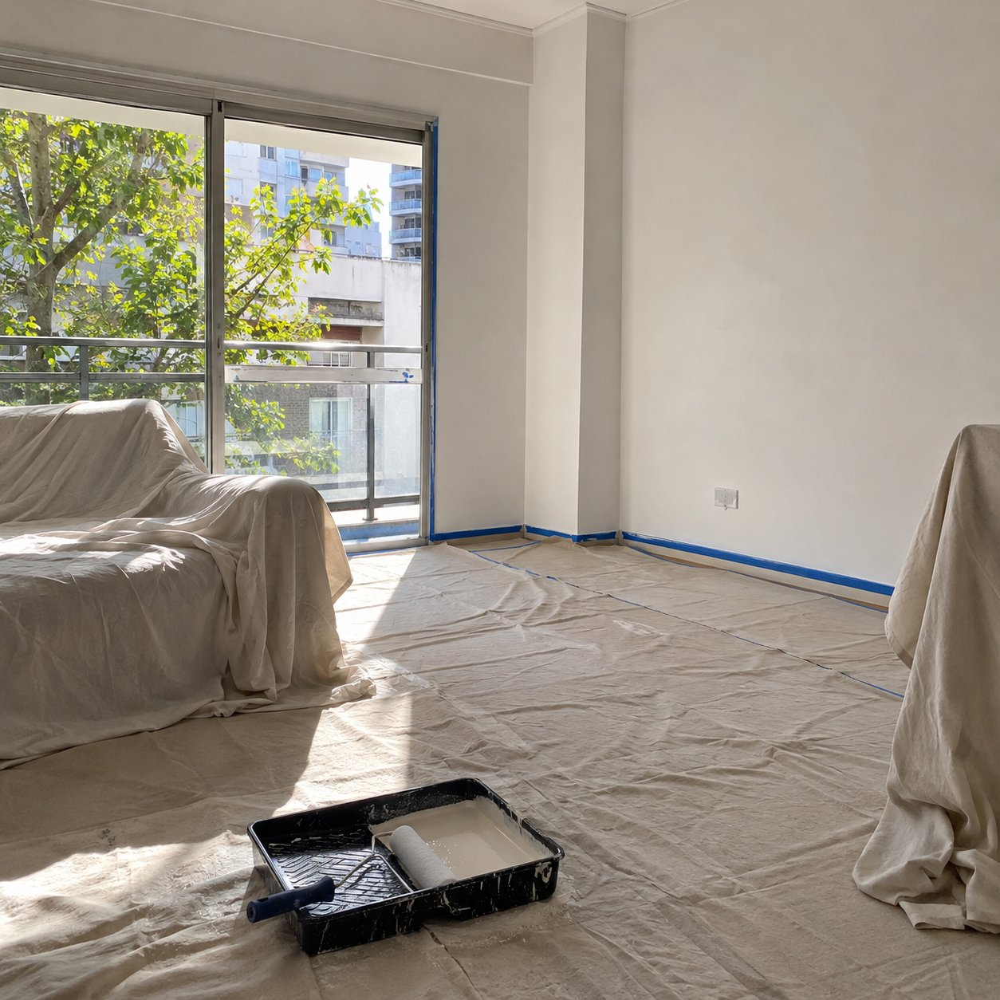
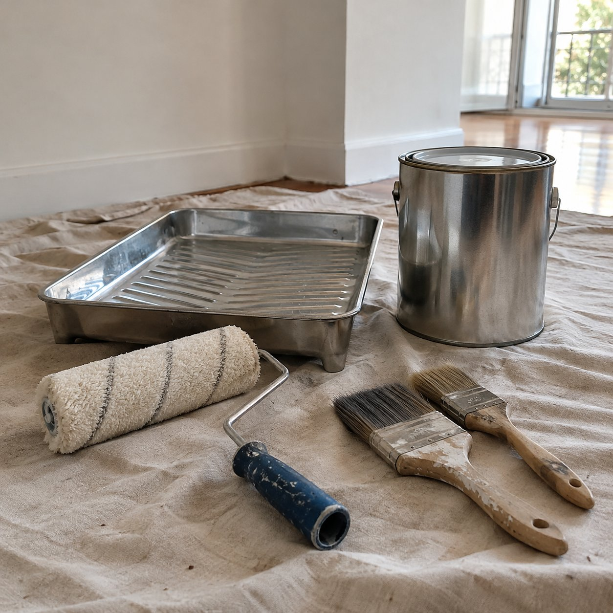

01
Pintura de ambientes
Renová las paredes de tu casa. Contanos qué ambientes querés pintar y cómo están las superficies.
Consultá por este trabajoPINTURA DE CASAS / CABA
Renová tus ambientes con Pinturerias Mauro s.a. Contanos qué querés pintar y conversemos tu proyecto.

Servicio de pintura de casas en CABA.

Renová las paredes de tu casa. Contanos qué ambientes querés pintar y cómo están las superficies.
Consultá por este trabajo
Cada superficie cuenta. Consultá por el trabajo de pintura que necesitás en paredes y techos.
Consultá por este trabajo
La consulta empieza por lo que hay que pintar y por cómo organizar el trabajo dentro de tu casa.
Consultá por este trabajoImágenes ilustrativas de ambientes y terminaciones. No son trabajos realizados del emprendimiento.
Las fotos del espacio, las medidas aproximadas y el estado de las paredes ayudan a entender qué trabajo necesitás.
Mandá fotos y contanos en qué barrio de CABA está tu casa.
Indicá qué ambientes querés pintar y cuándo te gustaría hacerlo.
Conversamos el alcance, los materiales y la disponibilidad antes de confirmar.

El servicio está orientado a casas en CABA. Contanos el barrio y qué necesitás pintar para consultar por tu proyecto.
Fotos de los ambientes, medidas aproximadas, estado de las paredes y ubicación. También ayuda saber para qué fecha pensás el trabajo.
El alcance y los materiales se conversan al preparar la propuesta. Consultá qué contempla el presupuesto antes de confirmar.
Contanos el color o la idea que tenés en mente. Los detalles de tonos, superficies y terminación se coordinan antes de empezar.
Mandanos tu consulta por WhatsApp. Empezá por el barrio, los ambientes y algunas fotos.
+54 9 11 6036-2101 ↗Servicio de pintura de casas en CABA.
Zona de trabajo: CABA. El mapa es orientativo y no indica un domicilio comercial.